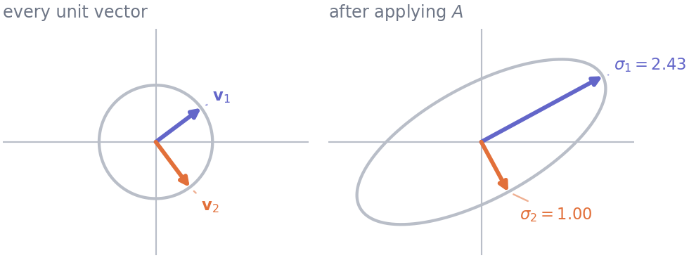
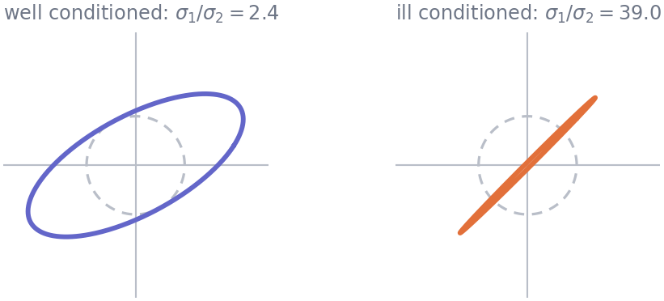
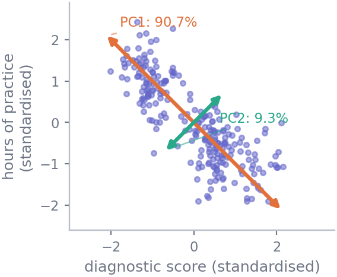

27 Directions in data: eigenvectors and the SVD
Mathematics · Unit 12
Why this unit is here
A matrix does not treat all directions alike. It stretches some, shrinks others, and leaves a few pointing exactly where they started. This unit asks which directions those are and by how much — one question, which turns out to answer four you have already met.
Why \(\operatorname{cond}(X^{\mathsf{T}}X)\) is \(\operatorname{cond}(X)^2\) (M11). Why a nearly collinear design leaves a long flat valley in the loss instead of a bowl (M11). What np.linalg.lstsq is actually doing (M10). And what a principal component is, which is where a dataset with forty columns gets turned into a picture you can look at. It is also the last unit of the Mathematics track.
27.1 Before you start
You should be able to:
- read \(A\mathbf{x}\) as an operation on a vector — M9;
- form \(X^{\mathsf{T}}X\) and say what shape it is — M9;
- say what the condition number of a matrix is for — M11;
- take a length and recognise orthogonality — M8.
Quick check. What does \(\begin{pmatrix} 2 & 0 \\ 0 & 3\end{pmatrix}\) do to the vectors \((1, 0)\) and \((0, 1)\)?
TipShow the answer
\((1,0) \mapsto (2, 0)\) and \((0,1) \mapsto (0, 3)\): each is stretched, neither is turned.
Those two directions are eigenvectors of that matrix, with stretch factors 2 and 3. This unit is about finding such directions when the matrix is not conveniently diagonal — and about what they tell you when the matrix is made out of data.
27.2 The idea
Take every unit vector — a whole circle of directions — and apply a matrix to all of them. What comes back is an ellipse. Not sometimes: always, for any \(2 \times 2\) matrix, and the higher-dimensional version is an ellipsoid.
That is a strong statement and it is the whole geometry of the subject. It says a matrix does exactly three things: it picks out a set of perpendicular input directions, stretches each by its own factor, and lays the results down along a (possibly different) set of perpendicular output directions.
Once you see that ellipse, several loose ends from earlier units tie themselves off. Its longest and shortest half-widths are the biggest and smallest stretch the matrix can apply; their ratio is the condition number. A nearly singular matrix is one whose ellipse is nearly flat.
27.3 The mechanics
27.3.1 Eigenvectors
For a square matrix \(A\), a nonzero \(\mathbf{v}\) with
\[ A\mathbf{v} = \lambda \mathbf{v} \]
is an eigenvector, and the number \(\lambda\) is its eigenvalue. In words: the matrix does not turn this direction at all, it only scales it. Note that \(\mathbf{v}\) is a direction — any nonzero multiple of an eigenvector is one too, with the same eigenvalue, so libraries return a unit-length representative and the sign is arbitrary.
Not every real matrix has real eigenvectors: a rotation by 90° turns every direction, so nothing survives unturned. But the matrices that arise from data are of a much better-behaved kind.
27.3.2 Symmetric matrices, which are the ones you get
\(A\) is symmetric if \(A^{\mathsf{T}} = A\). Both matrices this course cares about are: \(X^{\mathsf{T}}X\) from M11, and the covariance and correlation matrices of a dataset. For those, a theorem guarantees the good case:
A real symmetric matrix has real eigenvalues, and its eigenvectors can be chosen to be mutually orthogonal.
So a symmetric matrix has a full set of perpendicular directions it merely scales — its ellipse’s axes are its eigenvectors. This is why data analysis keeps producing orthogonal directions without anyone asking for them.
27.3.3 The singular value decomposition
Eigenvectors need a square matrix, and a data matrix is \(238 \times 3\). The SVD removes that restriction. Any matrix at all factorises as
\[ X = U\,\Sigma\,V^{\mathsf{T}}, \]
where \(\Sigma\) is diagonal with non-negative entries \(\sigma_1 \geq \sigma_2 \geq \cdots\) — the singular values — and \(U\) and \(V\) have orthogonal unit columns. Read left to right it is exactly the ellipse: \(V^{\mathsf{T}}\) names the input directions, \(\Sigma\) stretches each by its own \(\sigma\), and \(U\) says where the results point.
The bridge to eigenvalues is the fact that pays the debts listed at the top:
\[ X^{\mathsf{T}}X = V\Sigma^{2}V^{\mathsf{T}}, \]
so the eigenvalues of \(X^{\mathsf{T}}X\) are the squares of the singular values of \(X\), with the same directions.
27.3.4 The condition number, at last
\[ \operatorname{cond}(X) = \frac{\sigma_{\max}}{\sigma_{\min}} \]
— the ratio between the ellipse’s longest and shortest half-widths, which is the most and the least a matrix stretches anything. (Not its eccentricity, which is a different number: \(\sqrt{1 - \sigma_2^2/\sigma_1^2}\).) And now the M11 claim is a one-liner: the singular values of \(X^{\mathsf{T}}X\) are \(\sigma_i^2\), so their ratio is the square of the ratio, and \(\operatorname{cond}(X^{\mathsf{T}}X) = \operatorname{cond}(X)^2\) — for a design matrix with independent columns, which is the case that matters here. (If the columns are dependent, \(X^{\mathsf{T}}X\) has a zero eigenvalue and its condition number is infinite, which is the same warning said louder.) Forming \(X^{\mathsf{T}}X\) squashes the ellipse, which is why lstsq — which runs on the SVD of \(X\) itself — does not form it.

27.3.5 Principal components
Now point the same machinery at the data rather than at the design matrix. Centre every column, and take the covariance matrix (or, if the columns are on different scales, standardise first and take the correlation matrix). It is symmetric, so it has orthogonal eigenvectors. Those directions are the principal components, and each eigenvalue is the variance of the data along its direction.
The first principal component is the single direction along which the cloud is most spread out. This is a change of coordinates, not a change of data: you are looking at the same cloud from a better angle.
27.4 Worked example
The cohort has two stories in it, and PCA finds both.
Take the three numeric columns, standardise them so no column dominates through its units alone, and eigen-decompose the correlation matrix.
import numpy as np
import pandas as pd
cohort = pd.read_csv("../data/cohort.csv")
usable = cohort[cohort["final_score"].between(0, 100)]
names = ["diagnostic_score", "hours_practice", "final_score"]
Z = usable[names].to_numpy()
C = np.corrcoef(Z.T)
values, vectors = np.linalg.eigh(C)
order = np.argsort(values)[::-1]
values, vectors = values[order], vectors[:, order]
print("variance along each principal direction:")
for k in range(3):
axis = vectors[:, k]
axis = axis * np.sign(axis[np.argmax(abs(axis))]) # sign is arbitrary; fix it
loads = " ".join(f"{n.split('_')[0]:>10} {c:+.3f}" for n, c in zip(names, axis))
print(f" PC{k+1} eigenvalue {values[k]:.4f} ({100*values[k]/3:4.1f}%) {loads}")
print(f"\neigenvalues sum to {values.sum():.4f}, one per standardised column")variance along each principal direction:
PC1 eigenvalue 2.1673 (72.2%) diagnostic +0.667 hours -0.562 final +0.489
PC2 eigenvalue 0.7720 (25.7%) diagnostic -0.051 hours +0.619 final +0.783
PC3 eigenvalue 0.0607 ( 2.0%) diagnostic +0.743 hours +0.548 final -0.384
eigenvalues sum to 3.0000, one per standardised columnRead the loadings as recipes. PC1, which carries 72% of the variation, is arrived prepared, practised little, scored well — the three columns moving together in the pattern that has haunted these notes since M6. It is a single axis along which the cohort mostly lies, and it is a confound rather than an effect.
PC2, with a further 26%, has almost no diagnostic score in it and loads practice and final score in the same direction: practised a lot, scored well, regardless of how you arrived. That is the real effect, the one M11 recovered as a coefficient of \(+0.92\) once the diagnostic score was held fixed. Nobody told the decomposition to look for it.
PC3 is worth 2% and is nearly nothing, which is itself informative: it says the three columns are close to satisfying one linear relation, so they carry about two dimensions of information rather than three.

Finally, the promised connection to conditioning. The singular values of the two design matrices from M11 give their condition numbers directly:
h = usable["hours_practice"].to_numpy()
g = usable["diagnostic_score"].to_numpy()
ones = np.ones(len(h))
for name, X in [("1 + hours", np.column_stack([ones, h])),
("1 + hours + diagnostic", np.column_stack([ones, h, g]))]:
sigma = np.linalg.svd(X, compute_uv=False)
print(f"{name:<24} sigma = {np.round(sigma, 3)}")
print(f"{'':24} sigma_max/sigma_min = {sigma.max()/sigma.min():8.2f}"
f" np.linalg.cond = {np.linalg.cond(X):8.2f}")
print(f"{'':24} cond(X'X) = {np.linalg.cond(X.T @ X):.1f}"
f" and cond(X)^2 = {np.linalg.cond(X)**2:.1f}")1 + hours sigma = [282.956 6.829]
sigma_max/sigma_min = 41.43 np.linalg.cond = 41.43
cond(X'X) = 1716.7 and cond(X)^2 = 1716.7
1 + hours + diagnostic sigma = [1024.104 177.347 1.668]
sigma_max/sigma_min = 614.14 np.linalg.cond = 614.14
cond(X'X) = 377170.7 and cond(X)^2 = 377170.7The third design’s smallest singular value is \(1.67\) against a largest of \(1024\), and that near-zero direction is the collinearity of M11 measured rather than described: the columns very nearly satisfy a linear relation, so there is a direction in parameter space that the design barely responds to. It is the long flat valley, given a number.
27.5 Try it yourself
Exercise 1 Find the eigenvalues and eigenvectors of \(A = \begin{pmatrix} 3 & 1 \\ 1 & 3\end{pmatrix}\).
TipShow the solution
Eigenvalues solve \(\det(A - \lambda I) = 0\):
\[(3-\lambda)^2 - 1 = 0 \implies 3 - \lambda = \pm 1 \implies \lambda = 4 \text{ or } 2.\]
For \(\lambda = 4\): \((A - 4I)\mathbf{v} = 0\) gives \(-v_1 + v_2 = 0\), so \(\mathbf{v} \propto (1, 1)\). For \(\lambda = 2\): \(v_1 + v_2 = 0\), so \(\mathbf{v} \propto (1, -1)\).
Two things to notice. The eigenvectors are orthogonal — \((1,1)\cdot(1,-1) = 0\) — as the theorem promises for a symmetric matrix. And they are directions: \((2,2)\) and \((-1,-1)\) are the same eigenvector as \((1,1)\), so a library returning \((-0.707, -0.707)\) has not given you a different answer.
Exercise 2 A \(500 \times 8\) design matrix has singular values \(\sigma = (40, 12, 9, 5, 3, 2, 1, 0.004)\). What is \(\operatorname{cond}(X)\), what is \(\operatorname{cond}(X^{\mathsf{T}}X)\), and what should you do?
TipShow the solution
\[\operatorname{cond}(X) = \frac{40}{0.004} = 10{,}000, \qquad \operatorname{cond}(X^{\mathsf{T}}X) = 10{,}000^2 = 10^{8}.\]
Working through the normal equations would cost about eight of the sixteen digits double precision offers; working from the SVD of \(X\), about four. So first: use lstsq and not \((X^{\mathsf{T}}X)^{-1}\).
But the deeper answer is that \(\sigma_8 = 0.004\) against \(\sigma_1 = 40\) is a message about the data, not the arithmetic. It says the eight columns very nearly satisfy a linear relation — that they carry about seven columns’ worth of information. The coefficient attached to that near-null direction is whatever noise happens to say. Look for the relation, and consider dropping a column or combining two.
Exercise 3 You run PCA on a dataset with heights in metres and incomes in pounds, without standardising. PC1 comes out as almost exactly the income axis. Is that a discovery?
TipShow the solution
No. Incomes vary over tens of thousands and heights over fractions of a metre, so income’s variance dwarfs height’s by a factor of billions before anything interesting has been considered. PCA maximises variance, and variance has units.
Re-express the incomes in thousands of pounds and heights in millimetres and PC1 will change, from data that is identical in every respect that matters. That is the test: a result that moves when you change a unit is a result about the units.
Standardise each column first — subtract the mean and divide by the standard deviation — which is the same as working from the correlation matrix rather than the covariance matrix, and is what the worked example above does. The exception is when the columns are already in the same units and their relative sizes are genuinely meaningful, in which case leaving them alone is the informed choice.
27.6 Check it in Python
First, the definition:
A2 = np.array([[3.0, 1.0], [1.0, 3.0]])
values2, vectors2 = np.linalg.eigh(A2)
for k in range(2):
v = vectors2[:, k]
print(f"lambda = {values2[k]:.4f} A @ v = {np.round(A2 @ v, 4)}"
f" lambda * v = {np.round(values2[k]*v, 4)}"
f" equal: {np.allclose(A2 @ v, values2[k]*v)}")
print("eigenvectors orthogonal:", np.isclose(vectors2[:, 0] @ vectors2[:, 1], 0))lambda = 2.0000 A @ v = [-1.4142 1.4142] lambda * v = [-1.4142 1.4142] equal: True
lambda = 4.0000 A @ v = [2.8284 2.8284] lambda * v = [2.8284 2.8284] equal: True
eigenvectors orthogonal: TrueThen the bridge between the SVD and the eigenvalues, which is the claim the condition-number result rests on:
X = np.column_stack([ones, h, g])
U, sigma, Vt = np.linalg.svd(X, full_matrices=False)
eig_of_XtX = np.sort(np.linalg.eigvalsh(X.T @ X))[::-1]
print("singular values of X ", np.round(sigma, 4))
print("their squares ", np.round(sigma**2, 4))
print("eigenvalues of X.T @ X ", np.round(eig_of_XtX, 4))
print("match:", np.allclose(sigma**2, eig_of_XtX))
print("U S V.T rebuilds X:", np.allclose(U @ np.diag(sigma) @ Vt, X))singular values of X [1024.1041 177.3473 1.6675]
their squares [1.04878930e+06 3.14520663e+04 2.78070000e+00]
eigenvalues of X.T @ X [1.04878930e+06 3.14520663e+04 2.78070000e+00]
match: True
U S V.T rebuilds X: TrueAnd a check that fails, on purpose. It is tempting to compare eigenvectors entry by entry; the sign is arbitrary, so that comparison is unreliable even when nothing is wrong:
mine = vectors2[:, 0]
theirs = -vectors2[:, 0] # an equally valid answer to the same problem
print("mine ", np.round(mine, 4))
print("theirs", np.round(theirs, 4))
print("allclose on the entries: ", np.allclose(mine, theirs))
print("same direction (|dot| == 1): ", np.isclose(abs(mine @ theirs), 1.0))mine [-0.7071 0.7071]
theirs [ 0.7071 -0.7071]
allclose on the entries: False
same direction (|dot| == 1): TrueThe first test says the two disagree and the second says they do not. The second is the one to trust: compare eigenvectors by the absolute value of their dot product after scaling both to unit length — which is what eigh returns, so the check above is safe as written — or by fixing a sign convention yourself, as the worked example did.
27.7 Common wrong turns
Where this usually goes wrong
- Treating an eigenvector’s sign or length as meaningful
-
\(\mathbf{v}\) and \(-2\mathbf{v}\) are the same eigenvector. Two libraries, or the same library on two days, may hand you opposite signs, and neither is wrong. Never compare them with
==orallcloseon the raw entries. - Running PCA on unstandardised columns
- Variance carries units, so the column with the largest variance wins — which is not the same as the column with the largest numbers, since PCA centres first. A column of values near a billion that barely moves contributes almost nothing. Unless every column is already in the same units for a good reason, standardise first — that is, decompose the correlation matrix rather than the covariance matrix.
- Calling PC1 “the most important variable”
- It is not a variable at all; it is a weighted combination of all of them. In the cohort, PC1 is arrived prepared, practised little, scored well — three columns at once, which is precisely why it was worth computing.
- Reading a small eigenvalue as a useless direction
- It says the data barely varies along there, which usually means the columns nearly satisfy a linear relation. That is a finding about your variables, and often the most actionable thing in the output.
- Expecting eigenvectors from a non-square matrix
- \(A\mathbf{v} = \lambda\mathbf{v}\) needs input and output in the same space. A \(238 \times 3\) matrix has no eigenvectors; it has singular values and vectors, which is what the SVD exists to provide.
- Assuming a large condition number means you made a mistake
- It usually means your columns overlap. The remedy is in the data — drop a column, combine two, collect a design that separates them — not in the solver.
27.8 Check yourself
Answers are at the foot of the page. Give a reason as well as an answer.
\(X\) is a design matrix with two independent columns and singular values \(10\) and \(2\). What is \(\operatorname{cond}(X^{\mathsf{T}}X)\)?
- \(5\) b. \(25\) c. \(10\) d. \(100\)
- Why does a correlation matrix always have orthogonal eigenvectors, while a general square matrix need not?
- The eigenvalues of a \(4 \times 4\) correlation matrix are \(2.9, 0.9, 0.2, 0.0\). What does the last one tell you, and what do the four sum to?
- Your PCA gives PC1 loadings \((0.71, -0.71)\); a colleague’s gives \((-0.71, 0.71)\) on the same data. Who is wrong?
- In one sentence each: what do \(U\), \(\Sigma\) and \(V\) contribute in \(X = U\Sigma V^{\mathsf{T}}\)?
TipShow the answers
(b) \(25\). \(\operatorname{cond}(X) = 10/2 = 5\), and the eigenvalues of \(X^{\mathsf{T}}X\) are the squares of the singular values, so the ratio squares: \(25\). Option (a) is \(\operatorname{cond}(X)\), the most tempting wrong answer; (d) squares the wrong thing.
Because a correlation matrix is symmetric, and the spectral theorem guarantees real eigenvalues and orthogonal eigenvectors for real symmetric matrices. A general square matrix has no such guarantee — a \(90°\) rotation of the plane has no real eigenvectors at all, because it turns every direction. (Not every rotation does: a \(180°\) rotation is \(-I\) and leaves every direction unturned, and a rotation in three dimensions always fixes its axis.)
A zero eigenvalue means there is a direction along which the data does not vary at all: the four columns satisfy an exact linear relation, so one is redundant and the correlation matrix is singular. The four sum to 4 — the eigenvalues of a correlation matrix sum to the number of columns, because each standardised column contributes variance 1.
Neither. The sign of an eigenvector is arbitrary, and \((0.71, -0.71)\) and \((-0.71, 0.71)\) are the same direction. If they disagreed by anything other than an overall sign there would be something to investigate.
\(V\) names the perpendicular input directions; \(\Sigma\) says how much each is stretched; \(U\) names the perpendicular output directions those stretched pieces are laid along.